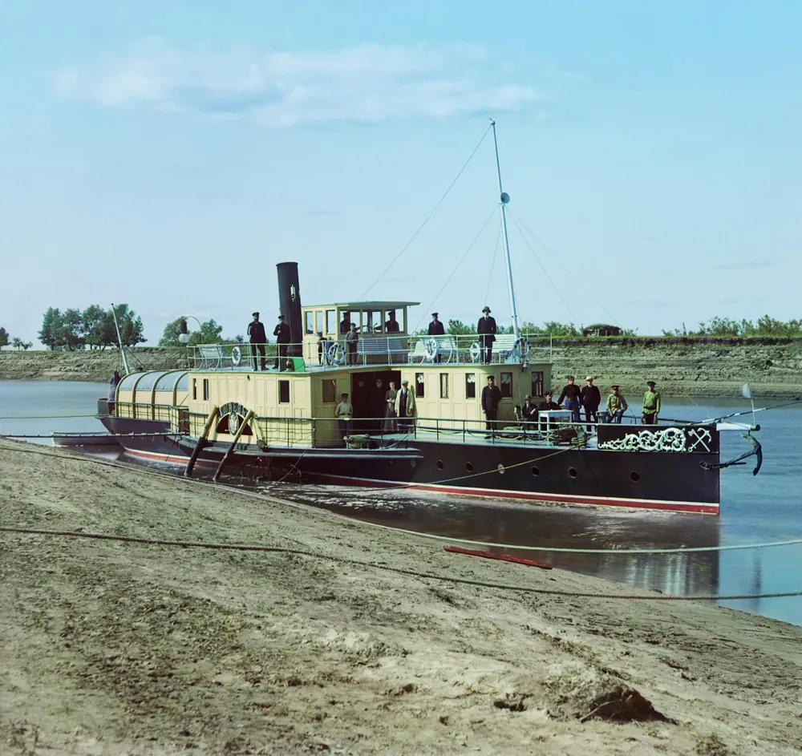

Для баров и магазинов
Хотите, чтобы Хартия была у вас в меню или на полке? Оставьте заявку, мы работаем с барами, ресторанами и магазинами. Расскажем о сортах и условиях поставки.


Хотите, чтобы Хартия была у вас в меню или на полке? Оставьте заявку, мы работаем с барами, ресторанами и магазинами. Расскажем о сортах и условиях поставки.

Сайт пивоварни предназначен для совершеннолетних.
Приходите, когда вам исполнится 18.